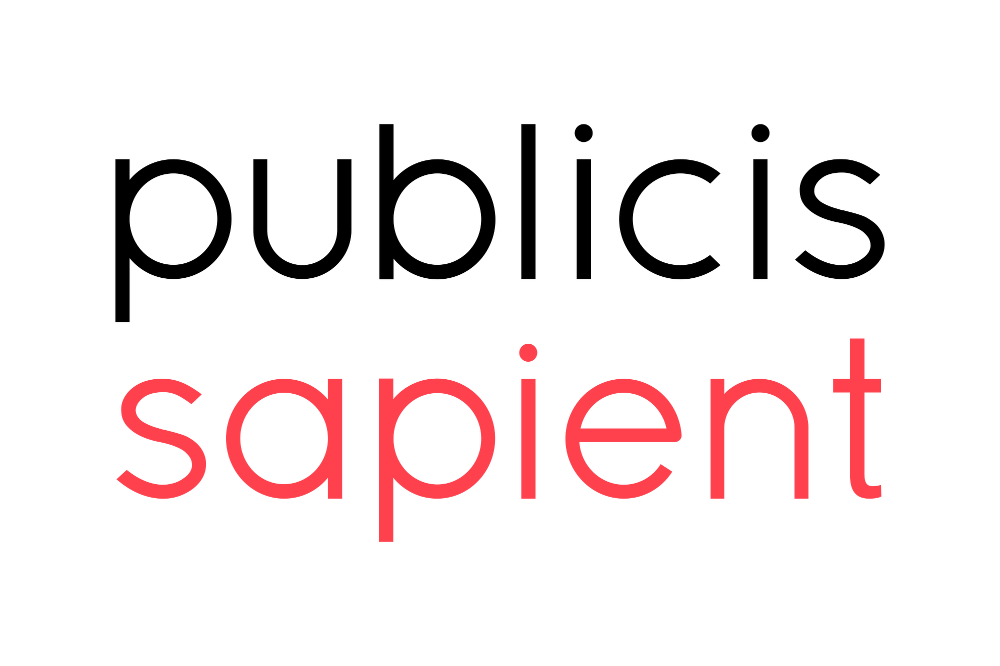

Work Experience



Accomplished Senior Manager with over 21 years of extensive experience in global talent systems and services across India, Europe, and the US. Adept at leading testing initiatives for HR information systems changes, driving stakeholder engagement, and mentoring teams for growth. Holds a Master's degree in Data Science, combining technical expertise with strategic leadership to drive organizational success and innovation.


2020
2012
2003
2015

2006
2006